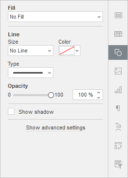
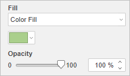
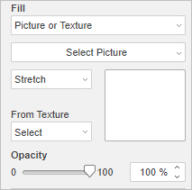
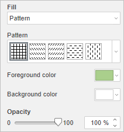

Umetanje SmartArt objekata
SmartArt grafika se koristi za kreiranje vizuelnog prikaza hijerarhijske strukture izborom rasporeda (layout) koji najbolje odgovara. Umetnite SmartArt objekte ili uređujte one koji su dodati u editorima trećih strana.
Da biste umetnuli SmartArt objekat,
- idite na karticu Insert,
- kliknite na dugme SmartArt,
- pređite kursorom preko jednog od dostupnih stilova rasporeda, npr. List ili Process,
- izaberite jedan od dostupnih tipova rasporeda sa liste koja se pojavi desno od označene stavke menija,
- SmartArt objekat možete sačuvati kao sliku na hard disku koristeći opciju Save as picture iz menija na desni klik.
SmartArt podešavanja možete prilagoditi u desnom panelu:
Napomena: Podešavanja boje, stila i tipa oblika mogu se prilagođavati pojedinačno.

-
Fill – koristite ovaj odeljak da izaberete popunu SmartArt objekta. Možete izabrati sledeće opcije:
-
Color Fill – izaberite ovu opciju da odredite jednobojnu (punu) boju kojom će biti popunjen unutrašnji prostor izabranog SmartArt objekta.

-
Gradient Fill – koristite ovu opciju da popunite oblik sa dve ili više boja koje postepeno prelaze jedna u drugu. Prilagodite gradijent bez ograničenja. Kliknite na ikonu Shape settings da biste otvorili meni Fill na desnoj bočnoj traci:

Dostupne opcije menija:
-
Style – izaberite između Linear ili Radial:
- Linear se koristi kada želite da boje teku s leva na desno, odozgo nadole ili pod bilo kojim uglom koji izaberete u jednom smeru. Prozor za pregled Direction prikazuje izabrane gradijent boje; kliknite na strelicu da izaberete unapred definisan smer gradijenta. Koristite podešavanje Angle za precizan ugao gradijenta.
- Radial se koristi za prelaz iz centra – počinje u jednoj tački i širi se ka spolja.
-
Gradient Point je tačka prelaza sa jedne boje na drugu.
- Koristite dugme Add Gradient Point ili klizač (slider bar) da dodate tačku gradijenta. Možete dodati do 10 tačaka gradijenta. Svaka nova dodata tačka ni na koji način ne utiče na trenutni izgled gradijent popune. Koristite dugme Remove Gradient Point da obrišete određenu tačku gradijenta.
- Koristite klizač da promenite položaj tačke gradijenta ili unesite Position u procentima za precizno pozicioniranje.
- Da biste primenili boju na tačku gradijenta, kliknite na tačku na klizaču, a zatim kliknite na Color da izaberete željenu boju.
-
Style – izaberite između Linear ili Radial:
-
Picture or Texture – izaberite ovu opciju da koristite sliku ili unapred definisanu teksturu kao pozadinu SmartArt objekta.

- Ako želite da koristite sliku kao pozadinu SmartArt objekta, možete dodati sliku From File izborom fajla sa hard diska računara, From URL unosom odgovarajuće URL adrese u otvoreni prozor, ili From Storage izborom potrebne slike koja je sačuvana na vašem portalu.
-
Ako želite da koristite teksturu kao pozadinu SmartArt objekta, otvorite meni From Texture i izaberite odgovarajući unapred definisani uzorak teksture.
Trenutno su dostupne sledeće teksture: canvas, carton, dark fabric, grain, granite, grey paper, knit, leather, brown paper, papyrus, wood.
-
Ako izabrana Picture ima manje ili veće dimenzije od SmartArt objekta, možete izabrati podešavanje Stretch ili Tile iz padajuće liste.
Opcija Stretch omogućava prilagođavanje veličine slike tako da odgovara veličini SmartArt objekta i potpuno popuni prostor.
Opcija Tile omogućava prikaz samo dela veće slike uz zadržavanje originalnih dimenzija ili ponavljanje manje slike uz zadržavanje originalnih dimenzija preko površine SmartArt objekta kako bi se prostor potpuno popunio.
Napomena: bilo koji izabrani unapred definisani Texture popunjava prostor u potpunosti, ali po potrebi možete primeniti efekat Stretch.
-
Pattern – izaberite ovu opciju da popunite SmartArt objekat dvobojnim dizajnom sastavljenim od pravilno ponavljanih elemenata.

- Pattern – izaberite jedan od unapred definisanih dizajna iz menija.
- Foreground color – kliknite na polje boje da promenite boju elemenata uzorka.
- Background color – kliknite na polje boje da promenite boju pozadine uzorka.
- No Fill – izaberite ovu opciju ako ne želite da koristite nikakvu popunu.
-
Line – koristite ovaj odeljak da promenite širinu, boju ili tip linije SmartArt objekta.
- Da biste promenili width (širinu) linije, izaberite jednu od dostupnih opcija iz padajuće liste Size. Dostupne opcije su: 0.5 pt, 1 pt, 1.5 pt, 2.25 pt, 3 pt, 4.5 pt, 6 pt. Alternativno, izaberite opciju No Line ako ne želite da koristite liniju.
- Da biste promenili color (boju) linije, kliknite na obojeno polje ispod i izaberite potrebnu boju.
- Da biste promenili type (tip) linije, izaberite odgovarajuću opciju iz padajuće liste (podrazumevano se koristi puna linija, a možete je promeniti u jednu od dostupnih isprekidanih linija).
- Da biste promenili opacity (neprozirnost) linije, unesite potrebnu vrednost ručno ili koristite odgovarajući klizač.
- Show shadow – označite ovo polje da SmartArt objekat baca senku.
-
Color Fill – izaberite ovu opciju da odredite jednobojnu (punu) boju kojom će biti popunjen unutrašnji prostor izabranog SmartArt objekta.
Kliknite na link Show advanced settings da biste otvorili napredna podešavanja.